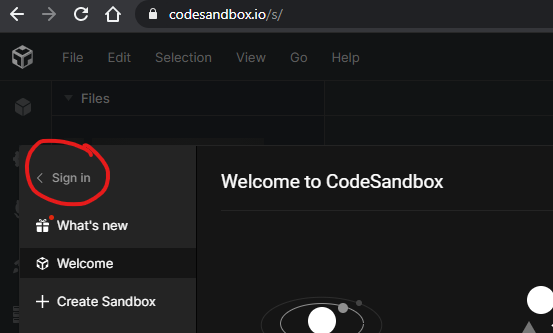
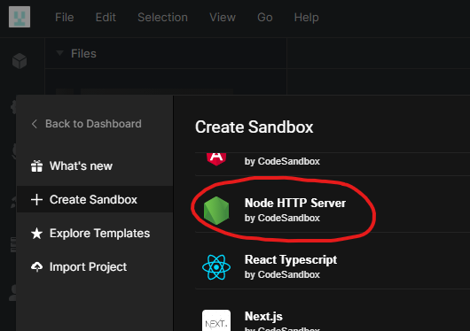
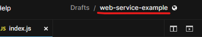
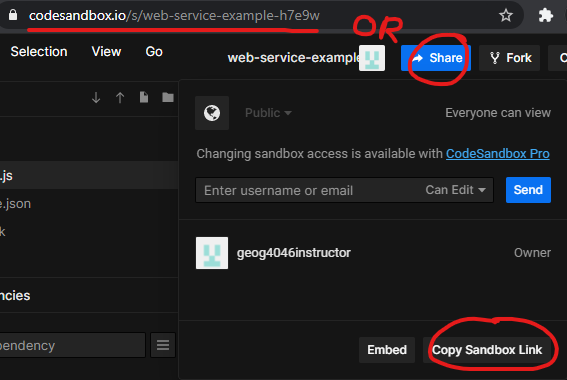
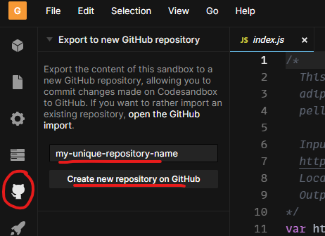

Assignment 2
Code a Web Service
Web services were introduced in the lessons as programs that allow other programs to talk to each other. In web GIS, this often means exchanging text data or images. In later assignments we will use other people’s web services in our applications, but today we will write the code to create our own web service from scratch.
The web service will perform a simple operation: find the distance between two points on Earth.
To do this, we will need a web server to host our application and listen for requests from clients. We will use CodeSandbox.io as a free test environment.
The programming language we will use is JavaScript.
Prep
-
Go to https://codesandbox.io/s and click Sign in. Use your Github account to sign in.
 -
Under Create Sandbox, choose Node HTTP Server.
 -
Once the Sandbox is created, take a moment to absorb what is on the screen, because it will seem like a lot. Note four main areas of interest:
- Files -
index.jsis created by default as our main application file. Click a file to view and edit its code. - Code -
index.jscontains some default JavaScript that we will modify here in the code area. - Preview - Your application’s output will be previewed here in an emulated browser.
- URL - You can copy this URL to a real browser to view your application’s output, just like a real web app!

- Files -
You don’t have a web service yet, but you’re all set to start coding one.
Data
The data will just be two pairs of latitude and longitude coordinates representing the two locations to calculate the distance between. For example, 30 degrees latitude and -90 longitude for New Orleans and 30.45 degrees latitude and -91.187 longitude for Baton Rouge.
Steps
- Delete all of the existing code in
index.jsand copy and paste the code below. Notice the three italicized lines beginning with//. These are comments and they indicate what the blocks of code under them do, for any person reading the code. You do not need to understand every bit of code here, just the general purpose of each part.var http = require("http"); http .createServer(function (request, response) { // Read the URL used to contact the web service and extract the latitude and longitude values, saving them each to a variable var requestUrl = new URL("http://" + request.headers.host + request.url); var latA = requestUrl.searchParams.get("latA"); var lonA = requestUrl.searchParams.get("lonA"); var latB = requestUrl.searchParams.get("latB"); var lonB = requestUrl.searchParams.get("lonB"); // Use the spherical law of cosines formula to calculate distance along the surface of a sphere. It is not the most accurate method for Earth, but it is good enough. Source: https://www.movable-type.co.uk/scripts/latlong.html const φ1 = (latA * Math.PI) / 180; const φ2 = (latB * Math.PI) / 180; const Δλ = ((lonB - lonA) * Math.PI) / 180; const R = 6371; // Earth's radius in km const d = Math.acos( Math.sin(φ1) * Math.sin(φ2) + Math.cos(φ1) * Math.cos(φ2) * Math.cos(Δλ) ) * R; // Output the calculated distance value to the client and complete the execution of the program. response.write("{distance: " + d + "}"); response.end(); }) .listen(8080); - Save
index.jsby clicking File > Save, or use the shortcutCtrl+S(Cmd+Son Mac). - Refresh the preview browser (not your browser); it should output
{distance: 0}because we did not provide input in the URL. - In the preview browser’s address bar, add the following text to the end of the URL and press
Enteron your keyboard:?latA=30&lonA=-90&latB=30.45&lonB=-91.187The URL now contains parameters with values. There are lat/lon pairs for a “point A” (New Orleans) and “point B” (Baton Rouge). These values are then plugged into the formula to calculate the distance:
latA= 30lonA= -90latB= 30.45lonB= -91.187
- The web service should now output
{distance: 124.53850456983854}, which is the distance in kilometers.
Try it
- Use Google Maps to get the latitude and longitude of two locations of your choosing, different from the New Orleans and Baton Rouge example above. Right-click the map to copy the coordinates at each place you choose.
- Substitute the new coordinate values into the URL of your web service and observe the new distance value. Compare this value to the distance measured with Google Maps (right-click the map, Measure distance).
- At the top of your code, on Line 1, insert a new comment. An alternative syntax for multiline comments opens with
/*and closes with*/. Give the following in the comments:- A description of your program in one or two brief sentences. What does it do, and what are the expected input and output?
- Your complete input URL with the coordinates you found. It should be something like:
https://yoursandbox.sse.codesandbox.io/?latA=30&lonA=-90&latB=30.45&lonB=-91.187 - The names of the locations you used for your coordinates (e.g., “the southwestern corner of Howe-Russell”, or “Beijing”)
- The output distance
- The comment should look similar to the screenshot below.

- You can change your sandbox’s name by clicking the name at the top of the window.
 - Copy the URL to your sandbox to submit for this assignment.

Submit
- Submit the URL to your sandbox. The sandbox should include a working
index.jswith the proper comment, including your web service URL so your instructor can easily copy the web service URL and paste it into the test browser.
Appendix
- You can save your sandbox code to a Github repository if you used your Github account to sign into CodeSandbox. Changes made in CodeSandbox will be reflected in the Github repository and vice versa. Be aware that creating a Github repository from a sandbox appears to change the sandbox’s URL.
